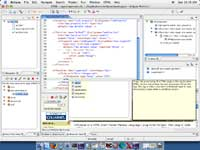
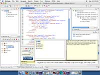
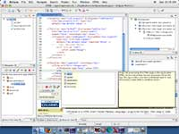
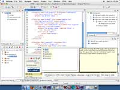

CFEclipse is a feature-rich CFML (ColdFusion Markup Language) plugin
for Eclipse. This plugin adds syntax highlighting, code insight, a content
outline, code problem finding, and a lot more for CF developers. It also
provides code highlighting for HTML, XML and for inline CSS and Javascript,
plus code insight for HTML 4.01, and a snippet (code fragment) feature.
CFML is a simple, yet powerful server side scripting language, made popular
through Macromedia's ColdFusion Server and further supported by New Atlanta's
BlueDragon servers.
Installation/Update
Which Eclipse:
To start with, you must download a copy of Eclipse. You want the 3.0 version of Eclipse.
There are two sub-types of Eclipse that you could use, all of which CFEclipse will run upon:
- Eclipse Platform Runtime Binary:
This is the minimum build we recommend. If you do not wish to do any Java development, download this build
- Eclipse SDK:
This includes not only the Eclipse base IDE, but also the java development tools and the Eclipse plug-in development
environment. If you wish to do plugin development, or help out with the development of CFEclipse then you could
download this build.
To download Eclipse, go to the Eclipse downloads page, select
a mirror, then the 3.0 latest release and make your selection of Eclipse sub-type.
Once your download has completed, unzip the file to wherever you want and start Eclipse.
Getting CFEclipse
We recommend that you use the built-in Eclipse update facility, like so:
- Select the "Help->Software Updates->Find and install" menu option
- On the screen that is displayed, select 'Search for new features to install' and click the 'Next' button.
- Now click the 'New Remote Site' button.
- Enter a name for the update site, for example "CFEclipse".
In the URL box, enter
http://cfeclipse.tigris.org and click the OK button
- You should now have a 'CFEclipse' node in the 'Sites to include in search' box.
Expand the CFEclipse node and you will see two child nodes: 'com.rohanclan.cfml.release.stable' and 'com.rohanclan.cfml.release.bleedingedge'
- Tick the 'com.rohanclan.cfml.release.stable' box and click 'Next'
- Eclipse will contact the CFEclipse site and retrieve the list of available plugins. Tick the plugin with the highest version number and click 'Next'
- The next instructions are self-explanatory
- Once Eclipse has restarted CFEclipse should have been successfully installed
- If you have an editor already linked to cfm, cfc, cfml, htm, or html files you'll need to change
the editor setting in Window/Preferences then in the tree select Workbench/File Associations,
and set cfm, cfc, cfml, htm and html to the CFML Editor.
- For more verbose instructions see Nathan Strutz's Resource Page
To activate code completion type < for HTML insight and <cf for CFML tag insight
- pressing the space bar after a tag name will show the attributes. When
you type a function name and type the ( char, it will tell you the syntax
for the function - cooler still it will actually tell you the return type.
If the CFML perspective isn't displayed, select "Window->Open Perspective->Other..." and then select the CFML perspective.
Releases
Please see the CFEclipse home page for release information.
Mission
The goal of this project is to create the best environment for
writing CFML code. You won't see any WYSIWYG editing, and you
won't see a lot of wizards. We intend to make the best CFML
editor for CFML coders.
Features
- Code & bracket highlighting
- Code Folding
- HTML and CF tag code completion
- Tag and function code insight (including data types)
- Snips for frequently used code
- CFC method outline view
- Content outline for your CFML pages (filterable with XPath)
- Integrated tabbed web browser for quick previewing
- Problem view, parses your code to find problems
- A scribble pad for your ideas
- And much more...
Related resources
The CFEclipse Wiki / Blog (Our new community site, come get involved!)
Nathan Strutz: CFEclipse Resource Page (Tips & Tricks FAQ)
Macromedia's ColdFusion MX (CFML Server side processor)
New Atlanta's Blue Dragon (CFML Server side processor ** Free version available **)
House of Fusion (ColdFusion mailing list)
Screen shots
 


 

{kind=link}